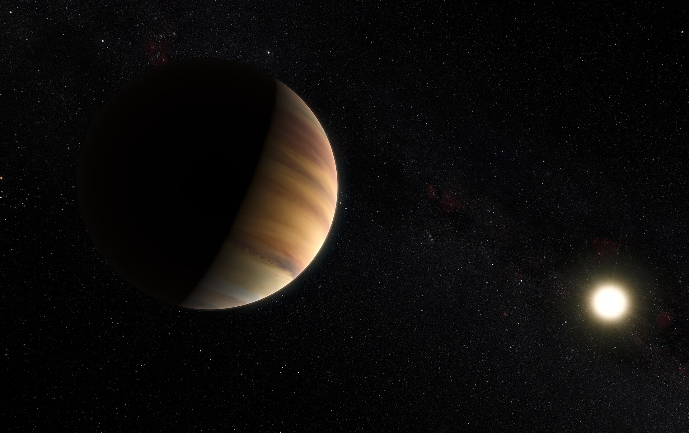

都卜勒效應：宇宙的變聲器！
你有注意過救護車經過時，警笛聲會從「尖銳」變成「低沉」嗎？這就是神奇的「都卜勒效應」！在浩瀚的宇宙中，光波也玩著同樣的遊戲：當發光的天體靠近我們時，光波會被「擠壓」，遠離時則會被「拉長」。

天文學家就是利用這個小把戲來觀察星星的「舞步」！當恆星向我們衝過來時，光波被擠壓，顏色會偏向藍色，我們稱為「藍移 (Blue Shift)」；相反地，當恆星離我們遠去時，光波被拉長，顏色就會偏向紅色，這就是所謂的「紅移 (Red Shift)」喔！


宇宙的隱形拔河：共同質心
為了讓大家親眼見證宇宙間的重力魔法，我們準備了這個簡單的實體教具！
>> 裝備介紹：這裡的「大球」是母恆星，而「小球」就是圍繞著它轉的系外行星啦。
[ 第一回合：孤單的恆星 ]
當畫面上只有恆星（大球）孤軍奮戰時，它就像個安靜的巨無霸，穩穩地待在正中央，完全不會亂動。
[ 第二回合：行星來搗亂！ ]
一旦小行星（小球）加入公轉的行列，雖然它很小，但它的重力還是會拉扯大恆星！這會讓它們的「共同質心」往小球那邊偏過去。轉動教具看看，你會發現大恆星竟然也被帶著，發生了一圈一圈規律的「晃動
(Wobble)」呢！
這就是科學家尋找系外行星的終極大絕招：即使小行星太暗、我們根本看不見它，但只要抓到恆星在「規律地搖擺」，我們就能「間接抓到」這顆調皮的隱形行星囉！
尋星必殺技：徑向速度法
把「都卜勒效應」加上「恆星的晃動」混在一起，就會變成天文學家最強的尋星武器——「徑向速度法 (Radial Velocity Method)」！當恆星被隱形的行星拉扯著，一下靠近我們、一下又遠離我們時，它的星光就會像變色龍一樣，週期性地在「紅移」和「藍移」之間變換。

這種找星星的方法對「大胖子行星」特別有效哦！如果行星超級重、又靠恆星很近，恆星就會被甩得更大力，光譜顏色的變化也會超級明顯。科學家只要像偵探一樣分析這些光譜，就能精準算出這顆行星的公轉週期跟它的最低質量！
不過，這個必殺技也有個致命弱點：如果行星繞行的軌道剛好完全「正對著」我們，恆星就不會朝我們的方向前後移動，那我們就什麼都卜勒訊號都抓不到啦！
人類的第一個外星鄰居：51 Pegasi b
在 1995 年，兩位超厲害的天文學家（馬約爾與奎洛茲）就是靠著徑向速度法，在「飛馬座 51」這顆跟太陽很像的恆星旁邊，成功揪出了人類史上發現的第一顆系外行星——51 Pegasi b！

這顆行星當時可是嚇壞了所有科學家！它明明有著木星一半的超級大體重，卻緊緊貼著母恆星在公轉，繞一圈竟然只要短短的 4.2 天！想像一下，那裡可是個表面溫度飆破攝氏 1000 度的地獄啊！也因為它，天文界多了一個超酷的新名詞：「熱木星 (Hot Jupiter)」。
這個打破常規的超級大發現，讓人類在尋找宇宙生命的路上邁進了一大步，這兩位科學家甚至因此抱走了 2019 年諾貝爾物理學獎呢！
外星家庭大亂鬥：波形的疊加
如果恆星身旁不只一顆行星，而是一整個「小跟班家族」呢？這時候徑向速度的曲線就會變成一團亂七八糟的波浪！這就是所謂的波形疊加。這就像是在看海浪：那些起伏很大的「大波浪」，代表著跑得慢或是特別重的行星；而上面那些密密麻麻的「小碎浪」，就是離恆星很近、跑得飛快的小行星啦！
要破解這團混亂的訊號，科學家必須使出「數學拆解術（如傅立葉轉換）」！就像是用濾網一樣，把複雜的曲線拆解成一個個單純的波。透過這些解碼過程，我們就能窺探出這些行星家族們彼此是怎麼互動跟跳舞的喔！